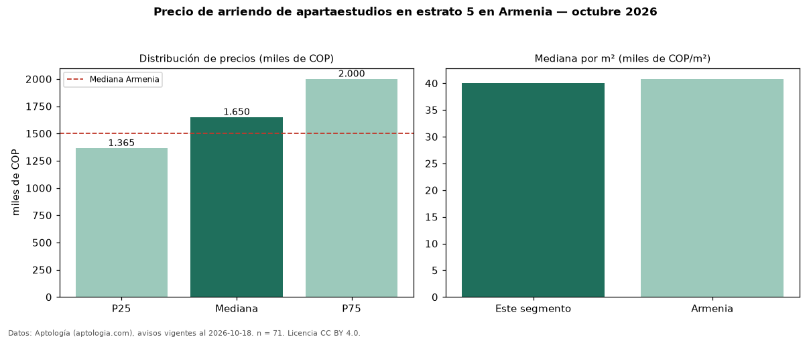

Precio de arriendo de apartaestudios en estrato 5 en Armenia — octubre 2026
En Armenia, la mediana de canon mensual de apartaestudios en estrato 5 es COP 1,65 millones, según 71 avisos vigentes. Eso es 10 % más que la mediana de los apartaestudios en arriendo de Armenia (COP 1,50 millones, n = 115); este segmento reúne el 62 % de esos avisos. Por metro cuadrado, la mediana es COP 40.000/m² al mes (n = 71), 2 % por debajo de los apartaestudios en arriendo de Armenia (COP 40.799/m²). El área mediana anunciada es 38 m². La administración mediana declarada es COP 186.500 al mes (n = 16), aparte del canon. 87 % de los avisos con el dato declara parqueadero. La mitad central de los avisos va de COP 1,36 millones a COP 2,00 millones (razón 1,5), una dispersión moderada. Datos: Aptología (aptologia.com), CC BY 4.0 — https://www.aptologia.com/arriendo/armenia. Archivos: PDF, CSV con las cifras y gráfica PNG.

| Avisos únicos | 71 |
|---|---|
| Percentil 25 | COP 1.365.000 |
| Mediana | COP 1.650.000 |
| Percentil 75 | COP 2.000.000 |
| Mediana por m² | COP 40.000 |
Fuente: avisos vigentes de portales inmobiliarios recopilados por Aptología, deduplicados (mínimo 30 avisos únicos por celda). Precios pedidos, no cerrados. Fecha: 2026-10-18.